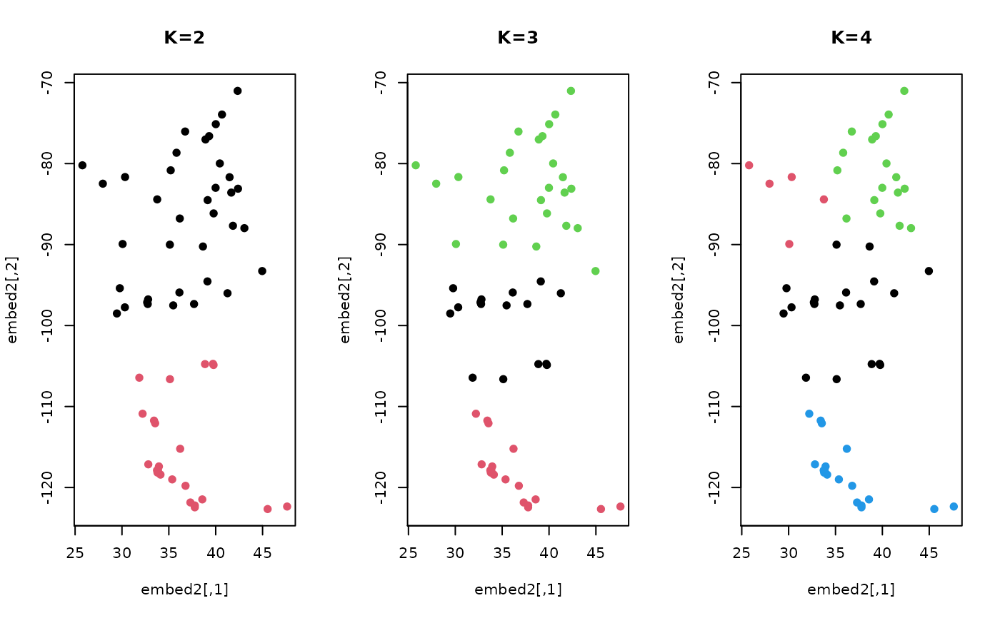

For \(n\) observations on a \((p-1)\) sphere in \(\mathbf{R}^p\), a finite mixture model is fitted whose components are spherical normal distributions via the following model $$f(x; \left\lbrace w_k, \mu_k, \lambda_k \right\rbrace_{k=1}^K) = \sum_{k=1}^K w_k SN(x; \mu_k, \lambda_k)$$ with parameters \(w_k\)'s for component weights, \(\mu_k\)'s for component locations, and \(\lambda_k\)'s for component concentrations.
mixspnorm( data, k = 2, same.lambda = FALSE, variants = c("soft", "hard", "stochastic"), ... )
| data | data vectors in form of either an \((n\times p)\) matrix or a length-\(n\) list. See |
|---|---|
| k | the number of clusters (default: 2). |
| same.lambda | a logical; |
| variants | type of the class assignment methods, one of |
| ... | extra parameters including
|
a named list of S3 class mixspnorm containing
a length-\(n\) vector of class labels (from \(1:k\)).
log likelihood of the fitted model.
a vector of information criteria.
a list containing proportion, center, and concentration. See the section for more details.
an \((n\times k)\) row-stochastic matrix of membership.
A fitted model is characterized by three parameters. For \(k\)-mixture model on a \((p-1)\)
sphere in \(\mathbf{R}^p\), (1) proportion is a length-\(k\) vector of component weight
that sums to 1, (2) center is an \((k\times p)\) matrix whose rows are cluster centers, and
(3) concentration is a length-\(k\) vector of concentration parameters for each component.
# \donttest{ # LOAD THE CITY DATA AND WRAP AS RIEMOBJ data(cities) locations = cities$cartesian embed2 = array(0,c(60,2)) for (i in 1:60){ embed2[i,] = sphere.xyz2geo(locations[i,]) } # FIT THE MODEL WITH DIFFERENT K's k2 = mixspnorm(locations, k=2) k3 = mixspnorm(locations, k=3) k4 = mixspnorm(locations, k=4) # VISUALIZE opar <- par(no.readonly=TRUE) par(mfrow=c(1,3)) plot(embed2, col=k2$cluster, pch=19, main="K=2") plot(embed2, col=k3$cluster, pch=19, main="K=3") plot(embed2, col=k4$cluster, pch=19, main="K=4")